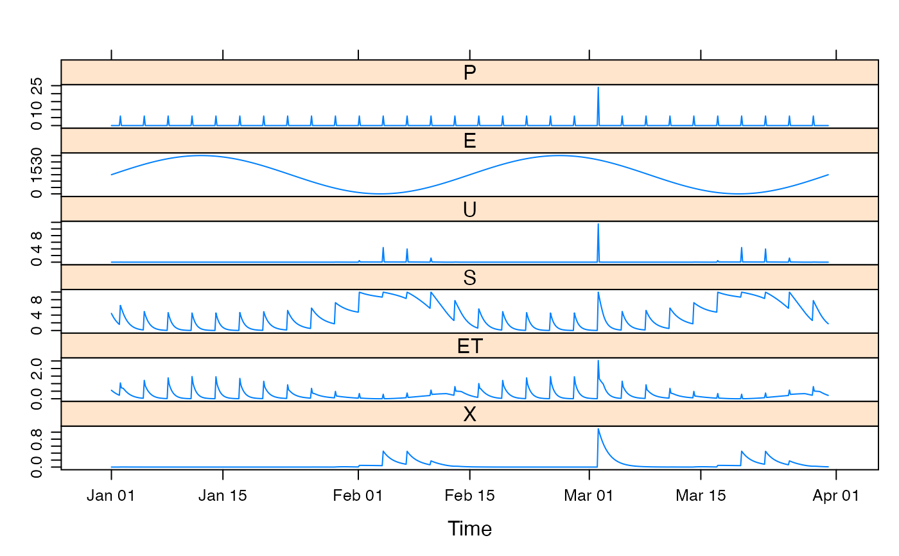
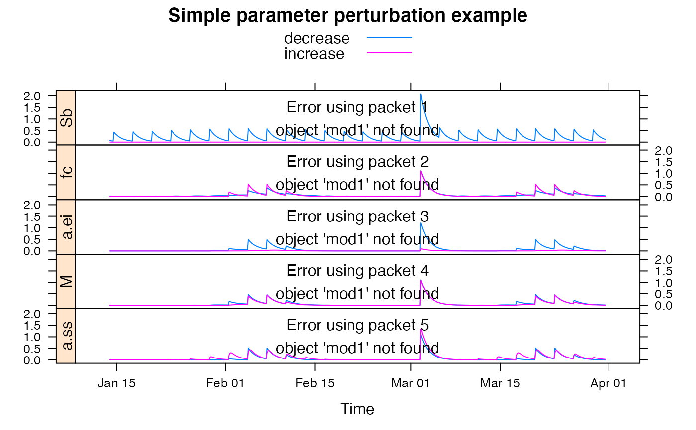

Single-bucket Soil Moisture Accounting models with saturated/unsaturated zones and interception.
bucket.sim(
DATA,
Sb,
fc = 1,
a.ei = 0,
M = 0,
a.ss = 0,
etmult = 1,
S_0 = 0.5,
return_state = FALSE
)time-series-like object with columns P (precipitation, mm) and E (potential evapo-transpiration, mm).
Maximum soil water storage (mm).
Field capacity (0 - 1).
Interception coefficient (\(\alpha_{ei}\)).
Fraction of catchment area covered by deep rooted vegetation.
Recession coefficients for subsurface flow from saturated zone (\(\alpha_{ss}\)).
Multiplier for the E input data.
Initial soil moisture level as a fraction of Sb.
to return the series U, S and ET (evapotranspiration).
the simulated effective rainfall, a time series of the same length as the input series.
From formulations given in Bai et. al. (2009), which were based on Farmer et. al. (2003).
The general mass balance structure is: $$dS/dt = p - q(S) - e(S, Ep)$$
The default parameter ranges were also taken from Bai et. al. (2009).
Farmer, D., M. Sivapalan, Farmer, D. (2003). Climate, soil and vegetation controls upon the variability of water balance in temperate and semiarid landscapes: downward approach to water balance analysis. Water Resources Research 39(2), p 1035.
Bai, Y., T. Wagener, P. Reed (2009). A top-down framework for watershed model evaluation and selection under uncertainty. Environmental Modelling and Software 24(8), pp. 901-916.
hydromad(sma = "bucket") to work with models as
objects (recommended).
## view default parameter ranges:
str(hydromad.options("bucket"))
#> List of 1
#> $ bucket:List of 5
#> ..$ Sb : num [1:2] 0.1 1200
#> ..$ fc : num [1:2] 0.01 1
#> ..$ a.ei: num [1:2] 0 0.49
#> ..$ M : num [1:2] 0 1
#> ..$ a.ss: num [1:2] 0 0.5
data(HydroTestData)
mod0 <- hydromad(HydroTestData, sma = "bucket", routing = "expuh")
mod0
#>
#> Hydromad model with "bucket" SMA and "expuh" routing:
#> Start = 2000-01-01, End = 2000-03-31
#>
#> SMA Parameters:
#> lower upper
#> Sb 0.10 1200.00
#> fc 0.01 1.00
#> a.ei 0.00 0.49
#> M 0.00 1.00
#> a.ss 0.00 0.50
#> Routing Parameters:
#> NULL
## simulate with some arbitrary parameter values
mod1 <- update(mod0,
Sb = 10, fc = 0.5, M = 0.5, etmult = 0.05,
a.ei = 0.05, a.ss = 0.01, tau_s = 10
)
## plot results with state variables
testQ <- predict(mod1, return_state = TRUE)
xyplot(cbind(HydroTestData[, 1:2], bucket = testQ))

## show effect of increase/decrease in each parameter
parRanges <- hydromad.getOption("bucket")
parsims <- mapply(
val = parRanges, nm = names(parRanges),
FUN = function(val, nm) {
lopar <- min(val)
hipar <- max(val)
names(lopar) <- names(hipar) <- nm
fitted(runlist(
decrease = update(mod1, newpars = lopar),
increase = update(mod1, newpars = hipar)
))
}, SIMPLIFY = FALSE
)
xyplot.list(parsims,
superpose = TRUE, layout = c(1, NA),
strip = FALSE, strip.left = TRUE,
main = "Simple parameter perturbation example"
) +
latticeExtra::layer(panel.lines(fitted(mod1), col = "grey", lwd = 2))
